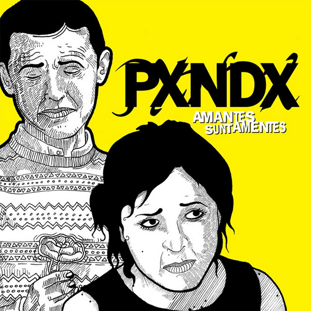
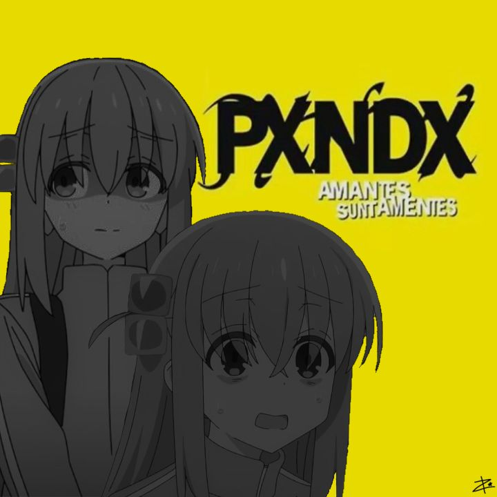
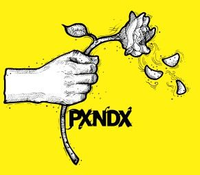

Amantes sunt amentes (2006)
El amor es como un juego. No quiero jugar
Características:
- Año de lanzamiento: 2000
- Número de pistas: 12
- Formato: CD / Digital
- Duración: 45 minutos
Precio:
$199.00 MX